Super-resolved walkthrough Bakery to atrium
Input references
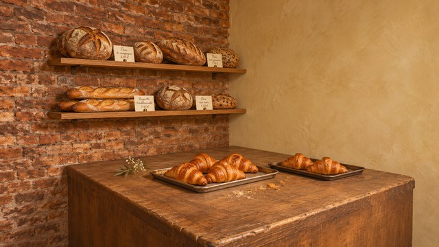
Bakery 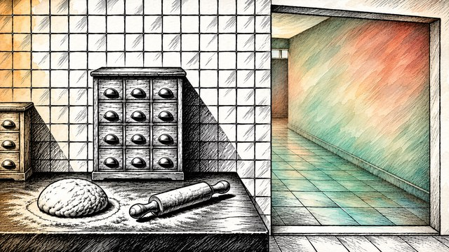
Ink-drawn prep room 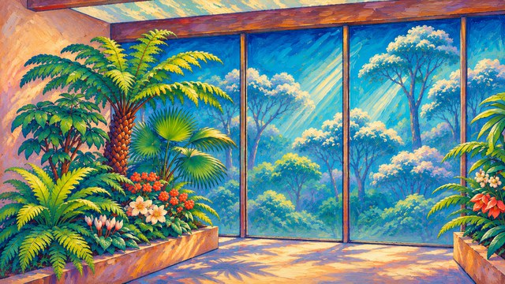
Botanical atrium
WorldBridge starts with images that barely overlap and imagines what comes into view as the camera moves.
WorldBridge benchmark
Short 100 real clips, each with two endpoint views over 5–15 seconds.
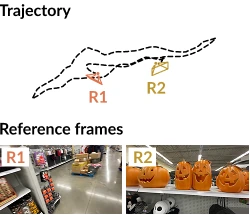
Bedroom to bathroom Timber hall to blue counter Entry to curved staircase Shop aisle to pumpkin display Courtyard to covered terrace
Dining area to pool Activity room to pool Lounge to ocean terrace Balcony to dining table Brick patio to dining room
Dining room to entryway Living room to kitchen Garden to kitchen Hallway to bright bedroom Corridor to blue bedroom
Church entrance to nave Classroom to exit Wooden porch to garden Green doorway to laundry Sidewalk to bus stop
Long 20 real sequences, each with six references along a 20–60 second path.
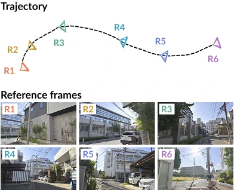
Hallway and bedrooms Bedrooms and stairwell Basement rec room and office Bedrooms and den Utility room and living areas
Entry and bedrooms Living room and home gym Bedrooms and sitting rooms Bath and open-plan kitchen Bright bedrooms and bath
Umstead visitor center Hautacam mountain road American Lake woodland Inniswood garden paths Yuanmingyuan lakeside
Duke campus paths Girraween rocky trail Yates Mill trail Tokyo neighborhood streets Czech village drive
Agent 20 synthetic worlds, each with six references on or off the same target path.
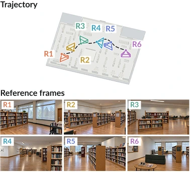
Commercial street Coastal trail University campus Outdoor market Botanical garden
Design studio Public library Exhibition gallery Transit terminal Residence and study
On path Off path
Method
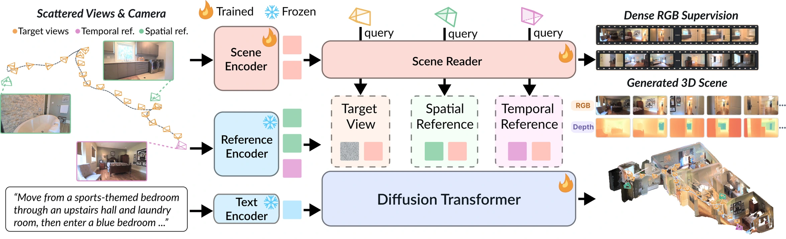
The scene encoder aggregates scattered references into a global representation, which the scene reader aligns to each view under RGB supervision. The diffusion transformer combines these features with encoded temporal and spatial references and text to generate RGB and geometry.
Capabilities
Layout control By reference poses and camera path
Text control In unobserved regions
Sparse reconstruction From two reference views
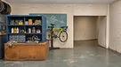
Bicycle workshop
Mediterranean art garden
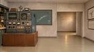
Radio laboratory
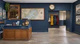
Ferry terminal
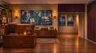
Letterpress studio
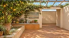
Citrus greenhouse
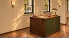
Riverside arts pavilion
Mediterranean art garden
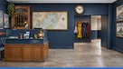
Harbour workshop
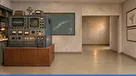
Radio station
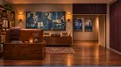
Garden theatre
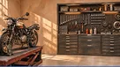
Canyon airfield
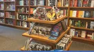
Bookshop aisle
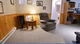
Living room
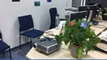
Shared office
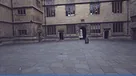
Library courtyard
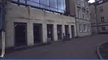
Historic courtyard
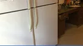
Kitchen
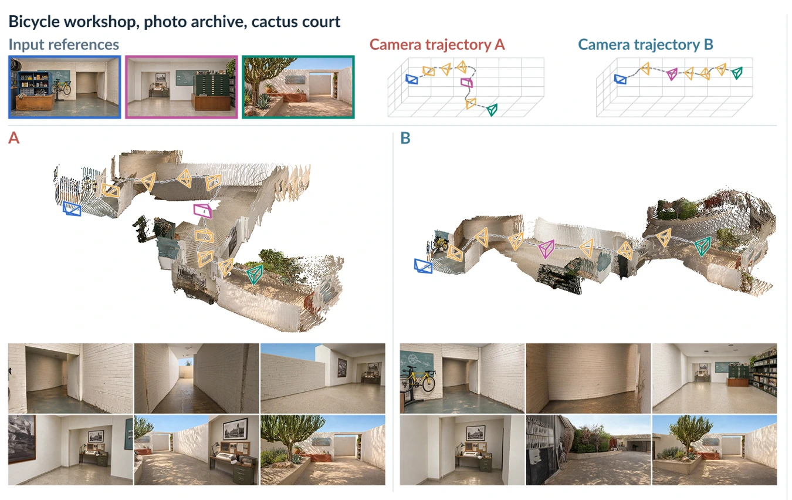
Two camera paths connect the same bicycle workshop, photo archive and cactus courtyard.
Quantitative results
Short Long Agent
WorldBridge-Short
Limitations. Thin structures can fragment, and details can drift when off-path references barely overlap the target view.
Video comparisons
Imaginary worlds
Real world
8 worlds
Scene
Reference poses
On path Off path
Baseline
SEVA
SEVA
Play together Comparison frame 01 / 77
Input references & camera trajectory
Enable JavaScript for synchronized playback.
Point cloud comparisons
Scene
Duke campus paths Pink bedroom and desk
Tokyo neighborhood streets Bedroom and hallway
Bedrooms and stairwell Basement rec room and office
Public library Exhibition gallery Civic plaza
Reference poses
On path Off path
Baseline
GAE GLD Gen3R 3DRAE
The lower views enlarge the boxed regions.